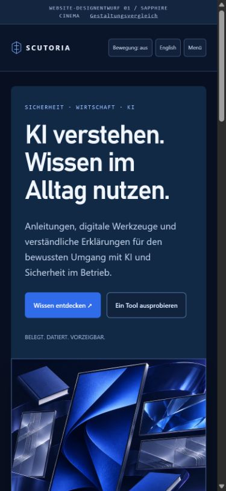

SCUTORIA / AUSGEWÄHLTE RICHTUNG
Sapphire Cinema.
Präzise Übergabe an Claude.
Die ausgewählte Gestaltungsrichtung mit ausführlicher Anleitung, Startprompt, Farb-/Layouttokens, Bildreferenzen und einem isolierten Prototyp. Die mobile Textbreite und das Studiomodul wurden für diese Übergabe korrigiert.


- Das komplette ZIP zusammen mit Zugriff auf das bestehende Websiteprojekt bereitstellen.
- Den Text aus STARTPROMPT-FUER-CLAUDE.txt als Nachricht einfügen.
- Claude zuerst die Anleitung und Referenzbilder lesen lassen. Die Umsetzung erfolgt in der vorhandenen Codebasis.
Enthaltene Seitentypen: Startseite, Bibliothek, Produktdetail, Tools und Studio. Neue Titel und Storyboards bleiben Gestaltungsmuster. Keine Liveänderung erfolgt.